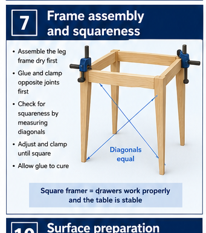
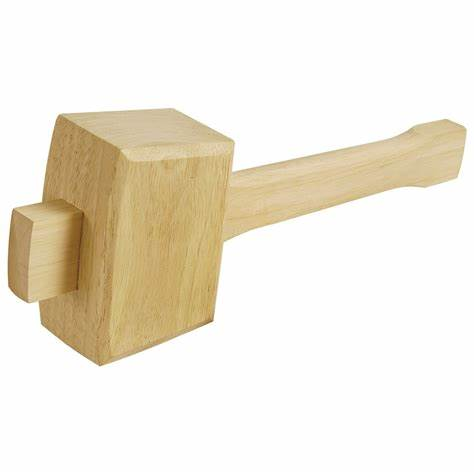

Fit
Each tenon enters its mortise with firm hand pressure and seats fully.
Industrial Technology – Timber
Weeks 7–8: Dry fitting, adhesives, clamping and squareness

Two-week roadmap
Use the dry fit to diagnose faults, then complete a controlled glue-up without distorting the frame. Apply the procedures and checks to the actual bedside-table project before irreversible work continues.
Your work
Your entries save automatically in this browser. Use Print / Save PDF before leaving the page.
Theory 1

Dry fitting means assembling the tapered-leg frame without glue so problems can be found and corrected before the joints become permanent. Begin with orderly labels so each rail, leg and apron returns to its planned position and orientation. Assemble the frame in stages, checking each mortise-and-tenon joint for a snug fit that seats fully without being forced.
Paired tapered legs must face the correct way and remain consistent in angle and appearance. The broad curved front apron should align cleanly with the front legs, with adjoining faces sitting flush and shoulders closing evenly. Once the main frame is together, check that rails are level, faces are aligned and the structure is not twisted.
Measure the two frame diagonals and compare them to confirm squareness. Any tight joint, gap, proud face, misalignment or incorrect orientation must be corrected before adhesive is applied. Never hammer or force a joint into place, as this can split timber or damage accurate shoulders.
Each tenon enters its mortise with firm hand pressure and seats fully.
Front, rear, left, right, tapers and the curved apron all face the intended way.
Shoulders close, adjoining faces sit flush and the top-bearing surfaces agree.
The frame stands without twist and diagonal checks agree within the approved tolerance.
Theory 2
A glue-up is time-limited and difficult to reverse. The order of assembly must be planned while the frame is still dry, when parts can be handled, clamps tested and mistakes corrected calmly.
Rehearse the sequence. Decide whether subassemblies are required, which joints close first and how the broad front apron will be protected. Lay out parts in order, confirm their labels and place clamps, pads, squares, mallets, clean-up materials and measuring tools within reach.
Check access. A clamp placed too early may block the next joint. A frame assembled in one large uncontrolled step may exceed the adhesive’s open time or make diagonal adjustment difficult. The strongest sequence closes the required joints while keeping enough access to inspect shoulders and squareness.
Assign hold points. Stop after each planned stage to confirm orientation, joint closure, flush faces and measurements. Do not continue simply because adhesive has been opened.
Theory 3
An appropriate timber adhesive must suit the table frame, provide a strong structural bond and allow enough working time for accurate assembly. Before gluing, ensure the mortise-and-tenon surfaces are clean, dry and free from dust, oil or damaged fibres. Rehearse the full assembly without adhesive so the tapered legs, rails and broad curved front apron can be positioned quickly and correctly.
Apply a thin, even layer to the joint surfaces, including the tenon cheeks and inside the mortise, without flooding the joint. Too little adhesive can create a glue-starved joint, while too much causes excessive squeeze-out, mess and possible movement during clamping. Work within the adhesive’s open time and assemble in the planned sequence.
Remove fresh squeeze-out safely with suitable tools or a damp cloth where appropriate, without spreading glue across visible faces. Keep the frame supported and undisturbed until the adhesive has fully cured before removing clamps, sanding joints or placing stress on the structure.
Adhesive cannot reliably fill a poorly fitted or distorted joint.
Dust, finish, oil and dried contamination reduce effective contact.
Cover the required bonding surfaces without flooding the joint or starving it.
Follow the teacher-approved product directions for assembly, clamping and cure.
Theory 4
A successful glue-up begins with a planned sequence so the tapered legs, rails and shaped front apron are assembled in the correct order before the adhesive begins to set. Clamps should apply firm, even pressure across the joints while keeping the frame aligned. Use pads or cauls between clamp faces and the timber to prevent dents, bruising and local damage.
Position clamps so they pull mortise-and-tenon joints together squarely without blocking access to key checks or creating a trip or pinch hazard. While the glue remains workable, confirm that the front apron and rails are correctly located, joint shoulders are closed and adjoining faces remain flush. Compare the frame diagonals to check squareness, then check flatness and look for twist by sighting across the legs and rails.
Make adjustments before the adhesive grips. Excessive clamp pressure can distort the frame, force joints out of alignment or squeeze out too much adhesive, weakening the bond.

Place pressure in line with the joints so the frame closes without bowing.

Check corners and reference faces while the assembly can still be adjusted.

Use only the teacher-approved method and protect the timber from bruising.

Use suitable pads and enough pressure to close the joint—not enough to crush fibres.
Theory 5
A rectangular frame is square when corresponding corners are at right angles. Measuring the two diagonals provides a practical check because equal diagonals indicate that the rectangle is not racked.
Measure from the same points. Hooking the tape or rule on different edges creates false differences. Use clearly identified corner references and repeat the measurement. Compare the figures rather than assuming the frame is square because one corner accepts a square.
Adjust the cause. If one diagonal is longer, the frame is pulled towards that direction. Change clamp position or pressure gradually, then recheck both diagonals and shoulder closure. Do not correct one measurement while opening a joint elsewhere.
Check for twist as well as racking. A frame can have similar diagonals but still sit unevenly if the legs or rails are not in the same plane. Place the assembly on a known flat surface and inspect from several angles before the adhesive sets.
Theory 6
The assembly is not complete when the clamps are tightened. Joint closure, adhesive residue, stability and curing conditions still need to be managed.
Clean at the approved stage. Remove squeeze-out using the teacher-directed method without washing adhesive into the grain or disturbing the joint. Residue left on visible surfaces can block finish penetration and appear as pale or uneven patches later.
Leave the frame supported. Do not move, load, twist or test the table before the adhesive has reached the stage specified by the product instructions and teacher. Early handling can break an apparently closed bond or introduce racking that is difficult to see.
Use a post-clamp quality gate. Once released, inspect joint lines, squareness, twist, top-bearing surfaces and the curved apron alignment. Record any issue before sanding hides the evidence. Seek teacher advice if correction would alter a joint or approved shape.
Confirm the directed clamping time and that the frame is supported safely.
Inspect every joint line and place the frame on a flat reference surface.
Check dimensions, top contact and any opening for an approved storage component.
Photograph the clamped frame and note the squareness or correction check.
Guided practice
Each incorrect option explains the misunderstanding. Use the hint, return to the theory and keep trying until the question is mastered.
Apply your learning
Write a genuine first attempt, check the live guidance, compare with the appropriate response example and improve your explanation before self-assessing.
Finish the two-week block
Your answers save in this browser as you work, but browser storage is not the official submission. Save the completed page as a PDF before closing it.
No marks, answers or personal information are sent from this webpage.